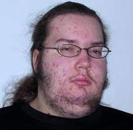

A by product of an industry that overtly sexualizes both men and women, an Incel is usually based, trolling women and the LGBTQIA++ Community A rarer type of incel is a femcel which is a man hater. Both Incels and Femcels are involved in sexist behaviour These neckbeards can be usually seen in herds in their natural habitat; Reddit. A breeding ground for alt-Right and femboys alike causing tension and unneccessary strife when meeting people online we need reform to stop these vile creatures from spreading their neckbeards propaganda and infecting more of the youth with this cancer
